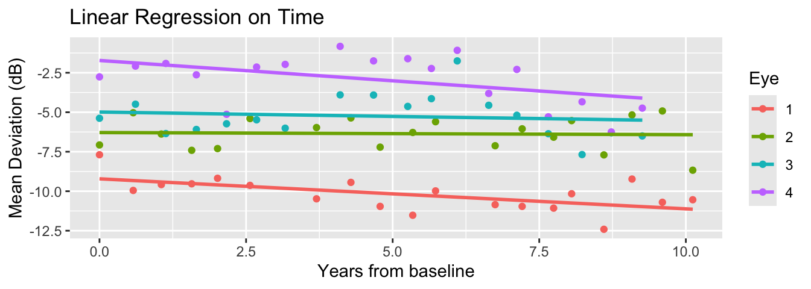
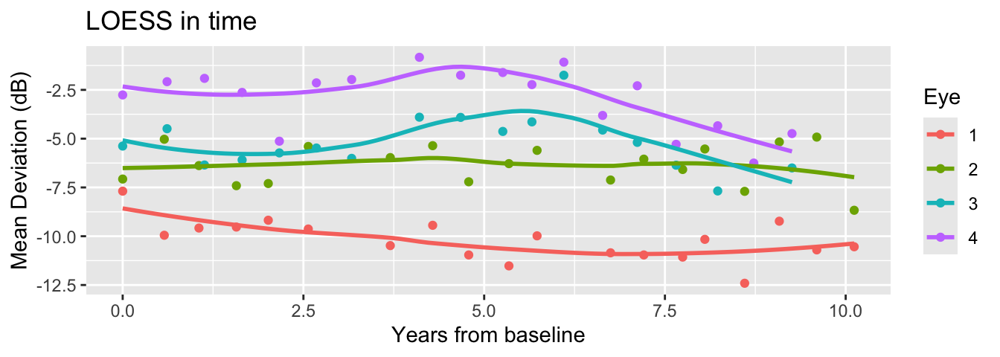
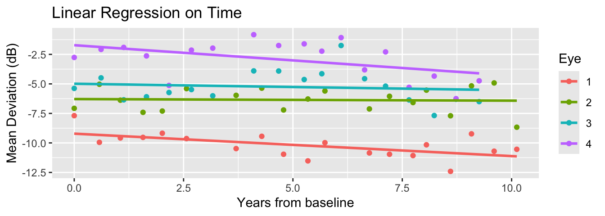
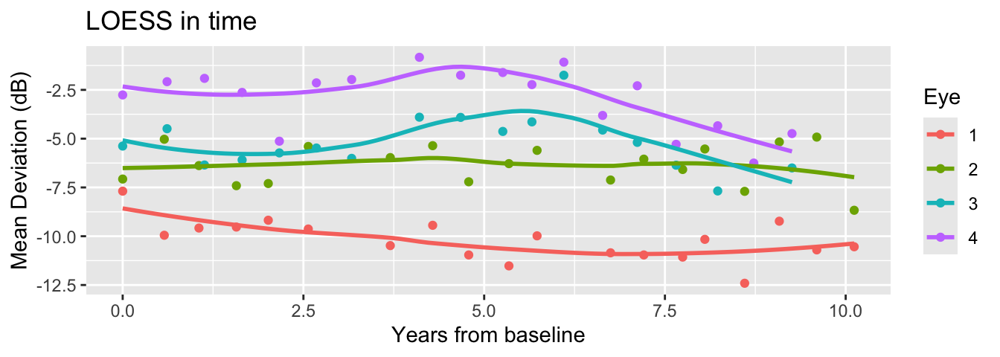
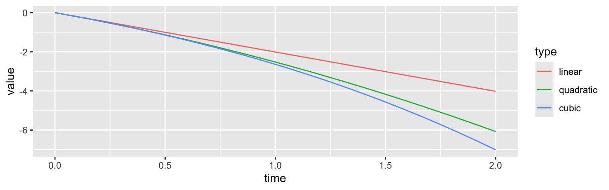

Mar 05, 2026
There are various ways to fit a model to time-varying behavior of the curves.


By the end of this lecture you should:
Understand the basic concepts of Gaussian processes (GP) and their usefulness in statistical modeling.
Compute posterior and predictive inference for a simple GP model.
Use GP as a building block in modeling time-correlated data.
Let \(i\) index distinct eyes (\(i=1,2,\ldots,n\)) and \(t\) index within-eye data in time (\(t=1,2,\ldots,n_i\)).
Suppose we are interested in effects of time-invariant predictors (age and iop):
\[Y_{it} = \underbrace{\mathbf{x}_i\boldsymbol{\beta}}_{\text{Fixed in time}} + \underbrace{\eta_{it}}_{\text{Varying in time}} + \epsilon_{it}\]
In a previous lecture, we included only time (\(X_{it}\)) and fit a random slope regression.
\[\eta_{it} = \theta_{0i} + \underbrace{X_{it}}_{=Time}\theta_{1i}.\]
What if we want a nonlinear model for time effects?
Linear increase/decrease in time is too limited! What if their visual loss recovers, or fluctuates?
\[\eta_{it} = \theta_{0i} + \sum_{k=1}^K X_{it}^{\color{red} k}\theta_{1i}^{(k)}.\]
Choosing the “right” type/number of bases is difficult (polynomials are usually not great choices).
In a continuous time, \(\eta_{it} = \underbrace{\eta_i}_{i-\text{th function}}(t)\) is useful:
Different people/groups have observations spanning different grids.
Makes easier the formulation of a prediction task: new time \(t^{pred}\) not in your dataset?
Can we introduce a probabilistic model for a whole collection of random functions \((\eta_i)_{i=1}^{n}\)?
Denote by \(f\) a random function with mean zero. A distribution of a random function is determined by knowing every possible finite-dimensional marginals:
\[\mathbf{f} = \begin{pmatrix} f(t_{1})\\ \vdots \\ f(t_{m}) \end{pmatrix} {\sim} N_{m}(\mathbf{0},\boldsymbol{\Sigma}(t_1,\ldots,t_m)),\]
where the \(st\)-th entry of the matrix is \(= \mathbb{C}[f(s), f(t)]\) for a given covariance function \(\mathbb{C}\).
We call such random function a Gaussian process.
If I write that covariance as \(C(t,s)\), then we must decide what the function \(C\) looks like.
Hypothesis 1 : The marginal variability should stay the same.
Hypothesis 2 : Time correlation should decay in, and only depend on, the amount of time elapsed.
Hypothesis 3 : We have expectations about the span of correlation and smoothness of the process.
These are all a priori hypotheses. The data may come from something very different!
Based on our considerations, let’s choose \(C\) that only depends on the lag between two time points.
\[ \mathbb{C}(f_s, f_t) = \sigma^2 C(|s-t|). \]
We want \(C(0) = 1\) and \(C(h)\to 0\) as \(h = |t-s|\to\infty\).
Different choices of \(C\) yields sampled functions with varying smoothness.
Exponential kernel: \(C(h) = \sigma^2\exp(-h/\rho)\)
Square exponential kernel: \(C(h) = \sigma^2\exp\{-h^2/(2\rho^2)\}\)
Matérn kernels
A list of available kernels is available here.
The squared exponential kernel (exponentiated quadratic kernel) is given by:
\[C(\mathbf{x}_i,\mathbf{x}_j) = \sigma^2 \exp\left(-\frac{|\mathbf{x}_i - \mathbf{x}_j|^2}{2\rho^2}\right)\]
For us, \(\mathbf{x}\) is 1D (time)…but it does not have to be!
Once we have a GP model, sampling from the prior is equivalent to sampling from a multivariate normal.
data {
int<lower=1> N;
array[N] real x;
real<lower=0> sigma;
real<lower=0> l;
}
transformed data {
// 0. A "small nugget" to stabilize matrix root computation
// This is for.better numerical stability in taking large matrix roots
real delta = 1e-9;
// 1. Compute the squared exponential kernel matrix
// x is the time variable
vector[N] mu = rep_vector(0, N);
matrix[N, N] R_C;
matrix[N, N] C = gp_exp_quad_cov(x, sigma, l);
for (i in 1:N) {
C[i, i] = C[i, i] + delta;
}
// 2. Compute the root of C by Cholesky decomposition
R_C = cholesky_decompose(C);
}
generated quantities {
// 3. Sample from the prior: multivariate_normal(0, C)
f ~ multi_normal_cholesky(mu, R_C)
}When you have longitudinal data, there are theoretical justifications for using \(\rho^{-1} \sim Gamma(5,5)\).
A priori the prior is concentrated around 1. For a prior mean, distance increase of 1 corrresponds to a multiplicative decay of correlation by \(e^{-1}\sim 37\%\).
Beware of the units! A year correlation is very different from that over a day.
For each \(i\)-th eye: time effect vector is given an independent prior based on the GP model.
\[\boldsymbol{\eta}_i = (\eta_{i1},\ldots,\eta_{in_i})^\top \stackrel{ind}{\sim} N_{n_i}(\mathbf{0},\mathbf{C}_i)\]
Each \(\eta_{it}\) is a pointwise value of the process \(\eta_i(t) = \eta_{it}\).
\[\mathbf{C}_i = \begin{bmatrix} C(0) & C(|t_{i1}-t_{i2}|) & \cdots & C(|t_{i1} - t_{in_i}|)\\ C(|t_{i1} - t_{i2}|) & C(0) & \cdots & C(|t_{i,2} - t_{in_i}|)\\ \vdots & \vdots & \ddots & \vdots \end{bmatrix}\]
We can use a squared-exponential kernel \(C(|s-t|) = \alpha^2e^{-|s-t|^2/2\rho^2}\) and also draw posterior samples of \((\alpha,\rho)\).
For \(i\) (\(i = 1,\ldots,n\)) and \(t\) (\(t = 1,\ldots,n_i\)),
\[\begin{align*} Y_{it} &= \mathbf{x}_{i}\boldsymbol{\beta} + \eta_{i}(t) + \epsilon_{it}, \quad \epsilon_{it} \stackrel{iid}{\sim} N(0,\sigma^2),\\ \boldsymbol{\eta}_i &\stackrel{ind}{\sim} N_{n_i}(\mathbf{0},\mathbf{C}_i),\\ \boldsymbol{\Omega} &\sim f(\boldsymbol{\Omega}). \end{align*}\]
We want to fit a model estimating the effects of age and iop on mean deviation, adjusting for nonlinear time effects:
\[\begin{align*} Y_{it} &= \underbrace{\beta_0 + \text{age}_i\beta_1 + \text{iop}_i\beta_2}_{=\mathbf{x}_{i}\boldsymbol{\beta}} + \eta_{it} + \epsilon_{it}\\ \boldsymbol{\eta}_i &= \begin{bmatrix} \eta_{i1}\\ \vdots\\ \eta_{in_i} \end{bmatrix} \stackrel{iid}{\sim} N(0,\mathbf{C}_i)\\ \epsilon_{it} &\stackrel{iid}{\sim} N(0,\sigma^2) \end{align*}\]
Our model for \(\eta_{it}\) is nonlinear in time: time enters the covariance structure of \(\mathbf{C}_i\) producing a function \(\eta_i(t) = \eta_{it}\).
A few data processing steps are needed to handle the data structure with more ease.
\(N\) will denote the number of all observations: \(N = \sum_{i=1}^{n} n_i\).
\(n\) will denote the total number of eyes.
\(p\) will denote the number of predictors fixed across time (\(p=3\): intercept, slopes for age and iop).
A separate vector of the number of observations (\(n_i\)) for each eye will be stored as s.
library(dplyr)
# Group predictors fixed across time
fixed_df <- dataset %>%
group_by(eye_id) %>%
reframe(age = unique(age), iop = unique(iop))
Xmat <- model.matrix(~age + iop, data = fixed_df)
# Number of measurements for each eye
groupsizes <- dataset %>%
group_by(eye_id) %>%
summarise(n = n()) %>%
pull(n)
stan_data <- list(
N = dim(dataset)[1],
n = max(dataset$eye_id),
p = dim(Xmat)[2],
t = dataset$time,
Y = dataset$mean_deviation,
s = groupsizes,
X = Xmat
)data {
int<lower=0> N; // total number of observations
int<lower=1> n; // number of eyes
int<lower=1> p; // fixed effects dimension
vector[N] Y; // observation
matrix[n, p] X; // fixed effects predictors
array[N] real t; // obs time points
array[n] int s; // sizes of within-pt obs
}
transformed data {
real delta = 1e-9;
}
parameters {
// Fixed effects model
vector[p] beta;
real<lower=0> sigma;
// GP parameters
vector[N] eta;
real<lower=0> alpha;
real<lower=0> rho;
}
transformed parameters {
vector[n] mu = X * beta;
}
model {
beta ~ normal(0,3);
z ~ std_normal();
alpha ~ std_normal();
sigma ~ std_normal();
rho ~ inv_gamma(5,5);
vector[N] mu_rep;
vector[N] eta;
int pos;
pos = 1;
// Ragged loop computing the mean for each time obs
for (i in 1:n) {
// GP covariance for the k-th eye
int n_i = s[i];
int pos_end = pos + n_i - 1;
matrix[n_i, n_i] R_C;
matrix[n_i, n_i] C = gp_exp_quad_cov(segment(t, pos, n_i), alpha, rho);
for (j in 1:n_i) {
// adding a small term to the diagonal entries
C[j, j] = C[j, j] + delta;
}
R_C = cholesky_decompose(C);
// Mean of data at each time
mu_rep[pos:pos_end] = rep_vector(mu[i], n_i);
// GP for the i-th eye
eta[pos:pos_end] = R_C * segment(z, pos, n_i);
pos = pos_end + 1;
}
// Normal observation model centered at mu_rep + eta
Y ~ normal(mu_rep + eta, sigma);
}The conditional model is pretty slow (can be improved) and results in poor mixing (can be run longer). Marginalizing the random effect can stabilize the computation.
In vector notation, our observation model for the \(i\)-th eye is
\[ \mathbf{Y}_i = \begin{bmatrix} Y_{i1}\\ \vdots \\ Y_{in_i} \end{bmatrix} = \mathbf{x}_i\boldsymbol{\beta} + \boldsymbol{\eta}_i + \boldsymbol{\epsilon}_i \] By marginalizing out \(\boldsymbol{\eta}_i\), we obtain
\[ \mathbf{Y}_i \sim N_{n_i}(\mathbf{x}_i\boldsymbol{\beta},\mathbf{C}_i + \sigma^2\mathbf{I}_{n_i}) \]
Only the model segment has to be changed.
model {
beta ~ normal(0,3);
alpha ~ std_normal();
sigma ~ std_normal();
rho ~ inv_gamma(5,5);
int pos;
pos = 1;
// Ragged loop computing joint likelihood for each eye
for (i in 1:n) {
// GP covariance for the k-th eye
int n_i = s[i];
vector[n_i] mu_rep;
matrix[n_i, n_i] R_C;
matrix[n_i, n_i] C = gp_exp_quad_cov(segment(t, pos, n_i), alpha, rho);
for (j in 1:n_i) {
// Add noise variance to the diagonal entries
C[j, j] = C[j, j] + square(sigma);
}
R_C = cholesky_decompose(C);
// Marginal model for the i-th eye
mu_rep = rep_vector(mu[i], n_i);
target += multi_normal_cholesky_lpdf(to_vector(segment(Y, pos, n_i)) | mu_rep, R_C);
pos = pos + n_i;
}
}The posterior mean of \(\rho\) (in year) is very large: the pattern of mean deviation change is very gradual over time.
A posteriori we believe mean deviations of an eye, 10 years apart and adjusted for age and iop, are still strongly correlated (\(e^{-5/6}\sim 43\%\)).
The model is continuous in nature and defined, in principle, for all times. This is very convenient for visualiztion, interpolation, and forecasting.
\[ \mathbf{Y}_i = \underbrace{\mathbf{f}_{i}}_{ = \mathbf{x}_{i}\boldsymbol{\beta} + \boldsymbol{\eta}_{i} } + \boldsymbol{\epsilon}_i \]
The vector \(\mathbf{f}_{i}\) may be interpreted as the denoised latent process of an eye-specific mean deviation over time: \((f_{i1},\ldots,f_{in_i})^\top\).
\[ \mathbb{E}[f_{it}] = \mathbf{x}_i\boldsymbol{\beta},\; \mathbb{C}(f_{it}, f_{it'}) = \mathbb{C}(\eta_{it},\eta_{it'}) \]
Say \(\mathbf{f}^{pred}_i\) is the values of \(f_i\) at \(m_i\) new time points which we want to predict, based on our GP model.
Key is that the random effects at observed times and new prediction time points are not independent.
\[\begin{align*} \begin{pmatrix} \mathbf{Y}_i \\ \mathbf{f}^{pred}_i \end{pmatrix} \sim N_{n_i + m_i}\left( \begin{pmatrix} \mathbf{x}_i\boldsymbol{\beta}\\ \mathbf{x}_i\boldsymbol{\beta} \end{pmatrix}, \begin{pmatrix} \mathbf{C}_i + \sigma^2\mathbf{I}_{n_i} & \mathbf{k}_i^\top \\ \mathbf{k}_i & \mathbf{C}^{pred}_i\end{pmatrix} \right), \end{align*}\] where \(\mathbf{k}_i = \mathbb{C}(\mathbf{f}^{pred}_i, \mathbf{f}_i)\) (“cross-covariances”).
An analytical formula exists for the conditional distribution of \(\mathbf{f}^{pred}\) given observed \(Y_{it}\) at \(n_i\) time points.
\[ \mathbf{f}^{pred}_i | \mathbf{Y}_i \sim N\left(\mathbf{x}_i\boldsymbol{\beta} + \mathbf{k}_i(\mathbf{C}_i + \sigma^2\mathbf{I})^{-1}(\mathbf{Y}_i - \mathbf{x}_i\boldsymbol{\beta}), \mathbf{C}_i^{pred}-\mathbf{k}_i(\mathbf{C}_i + \sigma^2\mathbf{I})^{-1}\mathbf{k}_i^\top\right) \]
Suppose we are interested in understanding the mean deviation trend for the first 5 years from baseline (\(t^{pred}\in [0,5]\)).
See the Stan Help page for details.
functions {
// Analytical formula for latent GP conditional on Gaussian observations
vector gp_pred_rng(array[] real x_pred,
vector Y,
array[] real x,
real mu,
real alpha,
real rho,
real sigma,
real delta) {
int N1 = rows(Y);
int N2 = size(x_pred);
vector[N2] f_pred;
{
matrix[N1, N1] L_Sigma;
vector[N1] Sigma_div_y;
matrix[N1, N2] C_x_xpred;
matrix[N1, N2] v_pred;
vector[N2] fpred_mu;
matrix[N2, N2] cov_fpred;
matrix[N2, N2] diag_delta;
matrix[N1, N1] Sigma;
Sigma = gp_exp_quad_cov(x, alpha, rho);
for (n in 1:N1) {
Sigma[n, n] = Sigma[n, n] + square(sigma);
}
L_Sigma = cholesky_decompose(Sigma);
Sigma_div_y = mdivide_left_tri_low(L_Sigma, Y - mu);
Sigma_div_y = mdivide_right_tri_low(Sigma_div_y', L_Sigma)';
C_x_xpred = gp_exp_quad_cov(x, x_pred, alpha, rho);
fpred_mu = (C_x_xpred' * Sigma_div_y);
v_pred = mdivide_left_tri_low(L_Sigma, C_x_xpred);
cov_fpred = gp_exp_quad_cov(x_pred, alpha, rho) - v_pred' * v_pred;
diag_delta = diag_matrix(rep_vector(delta, N2));
f_pred = multi_normal_rng(fpred_mu, cov_fpred + diag_delta);
}
return f_pred;
}
}
//...
generated quantities {
matrix[n,Np] f_pred;
matrix[Np,Np] Cp;
Cp = gp_exp_quad_cov(t_pred, alpha, rho);
// Posterior predictive on fixed time grid for all eyes
int pos;
pos = 1;
for (i in 1:n) {
int n_i = s[i];
f_pred[i,] = mu[i] +
gp_pred_rng(
t_pred,
segment(Y, pos, n_i),
segment(t, pos, n_i),
mu[i],
alpha,
rho,
sigma,
delta
)';
pos = pos + n_i;
}
}GP is notorious for not being scalable. Tl;dr is the need for matrix root / inverse computation.
For datasets covered in this class, Stan works well. For research purposes, worth exploring other specialized toolkits.
Do a bit of software research on Wikipedia
Code MCMC yourself to make it faster (e.g., using Rcpp)
Scalable Approximations (Activee research area)
GP is a flexible, high-dimensional model for handling correlated measurements over time.
With some basic knowledge about conditioning Gaussian random variables, we can implement posterior computation and prediction / interpolation.
Programming in Stan is straightforward but can be expensive with large number of observations.
Work on HW 04
Have a nice spring break!